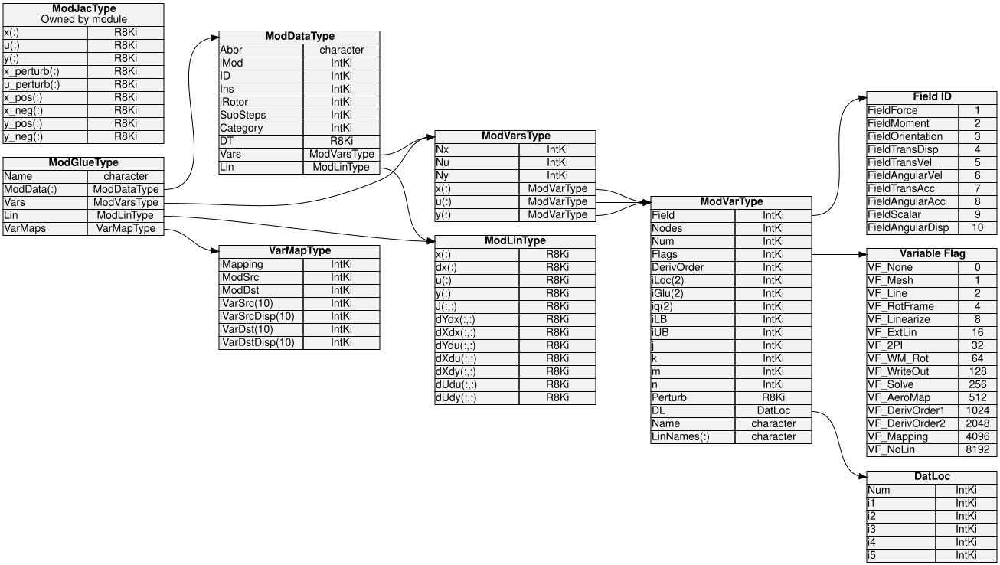

4.2.3. ModGlue – 모듈을 글로벌 어레이로 결합
ModGlue_CombineModules 에 의해 등록된 모듈별 변수 설명을 변환하는 단일 루틴입니다. MV_AddVar /
MV_AddMeshVar / MV_AddModule (보다 모듈 변수(ModVar))로
단단히 짜여 하나로 되어 있는 결합 시스템의 모습. 루틴의 출력은 다음과 같습니다.
ModGlueType 그 구조 Vars 멤버는 지정된 모듈 세트에 속하는 모든 상태, 입력 및 출력 변수에 대해 전역적으로 인덱스된 배열을 보유합니다. 이러한 전역 배열은 솔버 야코비안 구성(솔버) 및 선형화 절차(선형화).


그림 4.1 글루 코드에서 사용되는 완전한 데이터 구조 계층 구조입니다. 왼쪽에 표시된 유형(DatLoc, Field ID, Variable Flag)는 각 항목에서 참조됩니다. ModVarType. ModDataType (중앙, 모듈당)은 최상위 수준으로 수집됩니다. ModGlueType (오른쪽) by ModGlue_CombineModules.
4.2.3.1. 해당 ModGlueType 구조
ModGlueType 에 정의되어 있습니다 modules/openfast-library/src/Glue_Types.f90:
type ModGlueType
character(ChanLen) :: Name ! Label (e.g. 'Solver', 'Lin')
type(ModDataType), allocatable :: ModData(:) ! Per-module view
type(ModVarsType) :: Vars ! Combined variable arrays
type(ModLinType) :: Lin ! Linearization matrices
type(VarMapType), allocatable :: VarMaps(:) ! Relevant mappings
end type ModGlueType
핵심 멤버:
회원 |
설명 |
|---|---|
|
이 글루 인스턴스에 포함된 모듈당 하나의 항목입니다. 각 항목은 원본의 필터링된 사본입니다. |
|
연결된 배열 |
|
연결된 배열 |
|
연결된 배열 |
|
각 그룹의 총 스칼라 값 수(합 |
|
선형화 동작점 배열 보유( |
|
전역의 필터링된 하위 집합 |
4.2.3.2. 해당 iLoc 인덱스 범위
후에 ModGlue_CombineModules 반환, 각 변수
ModGlue%Vars%x / %u / %y 운반하다 iLoc(1:2) 범위 안에 위치하는 범위 접착제 수준 데이터 벡터. 특히 위치에 있는 변수의 경우
k 에서 ModGlue%Vars%x:
iLoc(1)– 길이의 첫 번째 스칼라 값 인덱스-Vars%Nx정렬.iLoc(2)– 마지막 스칼라 값의 인덱스입니다.
이것은 접착제 로컬 여과 후 지수; 해당 모듈별 위치는 변수의 iGlu 범위(이전에 설정됨 FAST_SolverInit → CalcVarGlobalIndices). 그만큼 iLoc / iGlu 분리는 동일한 변수 설명자가 모듈별로 동시에 존재할 수 있음을 의미합니다. ModData 뷰, 솔버 m%Mod
보기 및 선형화 m%ModGlue 각 컨텍스트에서 일관되고 겹치지 않는 인덱스 범위를 볼 수 있습니다.
4.2.3.3. 무엇 ModGlue_CombineModules 하다
서브루틴 서명은 다음과 같습니다.
subroutine ModGlue_CombineModules(ModGlue, ModDataAry, Mappings, &
iModAry, FlagFilter, Linearize, &
ErrStat, ErrMsg, Name)
논쟁 |
의지 |
설명 |
|---|---|---|
|
|
해당 |
|
|
글루 코드로 등록된 모듈별 데이터의 전체 배열입니다. |
|
|
메시 및 변수 매핑의 전체 배열. |
|
|
순서가 지정된 인덱스 목록 |
|
|
비트마스크 |
|
|
다음의 경우 |
|
|
사람이 읽을 수 있는 라벨이 저장됨 |
내부적으로 수행되는 네 가지 주요 단계는 다음과 같습니다.
계산 및 할당. 각 모듈을 반복합니다.
iModAry그리고 얼마나 많은 변수 설명자(그리고 총 스칼라 값)가 몇 개를 통과하는지 계산합니다.FlagFilter각각에 대한 테스트 x, u, y 여러 떼. 할당하다ModGlue%Vars%x / %u / %y정확히 그 크기로.복사 및 재인덱싱. 각 모듈에 대해 필터링된 내용을 복사합니다.
ModVarType설명자를ModGlue%Vars연속적으로 할당iLoc범위를 지정하므로 글루 수준 인덱스는 모든 모듈에서 연속적입니다. 모듈별ModGlue%ModData(i)%Vars하위 배열은 동일한 설명자를 수신합니다.iLoc분산/수집 루틴이 전역 벡터에서 직접 작동할 수 있도록 합니다. 선형 이름 접두사(예:"ED ","BD_1 ") 앞에는LinNames이 단계에서는 전 세계적으로 고유한 채널 라벨을 생성합니다.필터 매핑. 전체를 반복
Mappings두 가지 모두에 해당하는 것만 배열하고 유지합니다.iModSrc및iModDst~에 나타나다iModAry. 로컬 항목에 대해 보관된 항목을 다시 색인화합니다.ModData위치(전역이 아님ModDataAry위치)에 저장하고ModGlue%VarMaps.선형화 스토리지 할당 (때만
Linearize=.true.). 할당하다Lin동작점 벡터(x,dx,u,y) 및 6개의 야코비 행렬 모두(dXdx,dXdu,dYdx,dYdu,dUdu,dUdy) 치수Vars%Nx및Vars%Nu / Ny.
4.2.3.4. 어디 ModGlue_CombineModules 라고
루틴은 OpenFAST 초기화 중에 두 번 호출되어 두 개의 고유한 생성 ModGlueType 다양한 변수 선택이 있는 인스턴스:
4.2.3.4.1. m%Mod – 솔버 접착제 모듈(in FAST_SolverInit)
iMod = [p%iModTC, p%iModOpt1] ! TC + Option-1 indices
call ModGlue_CombineModules(m%Mod, GlueModData, GlueModMaps, iMod, &
VF_Solve, .true., ErrStat2, ErrMsg2, &
Name='Solver')
포함된 모듈: 밀착 결합(TC) 모듈과 옵션-1 모듈.
변수 필터:
VF_Solve. 이 플래그는 다음에 의해 설정됩니다.FAST_SolverInit → SetVarSolveFlags뉴턴 반복에 나타나야 하는 모든 변수: TC 연속 상태, 모듈 간 결합과 관련된 모션/로드 메시 입력/출력 및 변수 간 매핑된 입력/출력(참조 솔버 전체 선택 기준에 대해서는).Linearize:
.true.— 솔버의 뉴턴 선형 시스템이 작동점 선형화와 동일한 저장 공간을 재사용하기 때문에 야코비안 행렬이 여기에 할당됩니다.결과:
m%Mod%Vars%NxTC 변위/속도 스칼라의 수와 같습니다(p%NumQ);m%Mod%Vars%Nu표시된 모든 TC 및 Option-1 입력을 포괄합니다.VF_Solve. 야코비안 차원p%NumJ = p%NumQ + p%NumU직접 따라옵니다.
4.2.3.4.2. m_FAST%ModGlue – Linearization 접착 모듈( ModGlue_Init)
LinFlags = VF_Linearize + VF_Mapping + VF_Mesh
call ModGlue_CombineModules(m%ModGlue, m%ModData, m%Mappings, &
p%Lin%iMod, LinFlags, &
p_FAST%Linearize, ErrStat2, ErrMsg2, &
Name="Lin")
포함된 모듈: 다음에 의해 설정된 표준 순서에 따라 선형화에 참여하는 모든 모듈
p%Lin%iMod(InflowWind → SeaState → ServoDyn → ElastoDyn → BeamDyn → AeroDyn → HydroDyn → SubDyn → MAP++ → MoorDyn).변수 필터:
VF_Linearize + VF_Mapping + VF_Mesh. 그만큼VF_Linearize플래그는 다음에 따라 변수별로 적용됩니다.LinInputs/LinOutputs입력 파일의 설정;VF_Mapping/VF_Mesh변수가 정식 선형화 출력이 아닌 경우에도 결합 야코비 행렬을 조합할 수 있도록 메시 결합 변수가 항상 포함되도록 해야 합니다.Linearize:
p_FAST%Linearize— 선형화가 요청될 때만 전체 전체 시스템 행렬을 할당합니다.결과:
m%ModGlue%Vars%Nx / %Nu / %Ny의 차원을 제공 A, B, C, D, dUdu, dUdy 에 기록된 행렬.lin파일.
4.2.3.5. 글로벌 인덱스를 사용하여 매트릭스 어셈블리를 구현하는 방법
모든 변수 설명자는 iLoc 접착제의 범위
Vars 전역 데이터 벡터에 대한 배열, 분산 및 수집 작업은 간단한 인덱스 범위 할당이 됩니다. 예를 들어, 모듈의 상태 벡터를 전역 솔버 벡터로 압축하려면 x_global:
do iVar = 1, size(ModData%Vars%x)
associate (Var => ModData%Vars%x(iVar))
x_global(Var%iLoc(1):Var%iLoc(2)) = x_mod(Var%iGlu(1):Var%iGlu(2))
end associate
end do
그리고 전역 야코비안 열에서 모듈별 하위 열로 해당 수집을 수행하려면 오프셋 산술이 필요하지 않습니다. iLoc index는 이미 올바른 전역 위치를 인코딩합니다.
마찬가지로, VarMaps 다음에 저장된 배열 ModGlueType 야코비안 결합 항을 독립적으로 만듭니다. 동안
BuildJacobianTC / BuildJacobianIO (안에 FAST_Solver.f90) 그리고
ModGlue_Linearize_OP (안에 FAST_ModGlue.f90) 루프는 간단합니다.
do i = 1, size(ModGlue%VarMaps)
! perturb source output, evaluate destination input change
! scatter result into J(iVarDst%iLoc, iVarSrc%iLoc)
end do
이 수준에서는 모듈별 지식이 필요하지 않습니다. ModGlueType
인스턴스는 완전히 자기 설명적입니다.